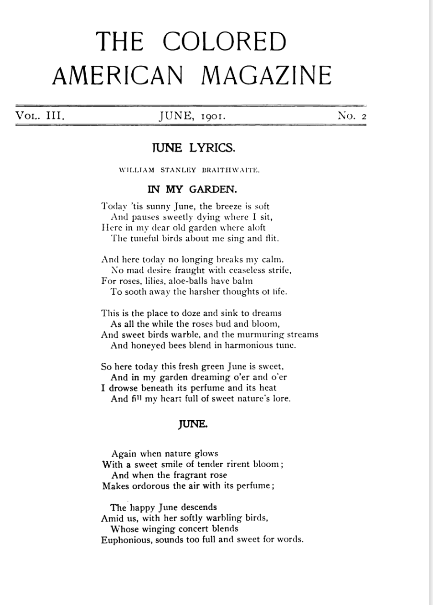

"June" is a poem by William Stanley Braithwaite preserved in the HathiTrust Digital Library. Viewing the scanned page provides historical context such as layout, typography, and surrounding magazine content.
View the original scanned page: HathiTrust Page 103
